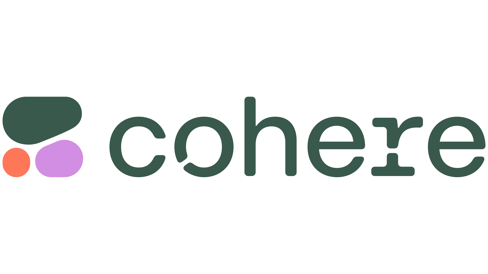
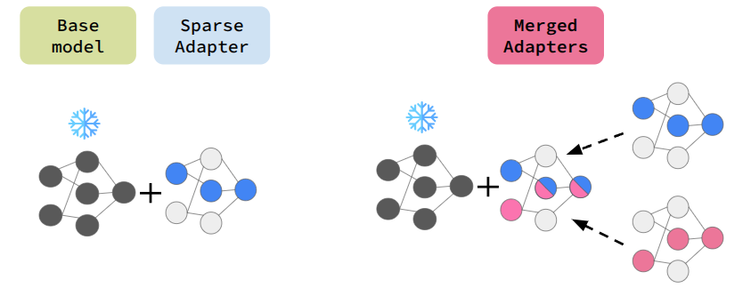
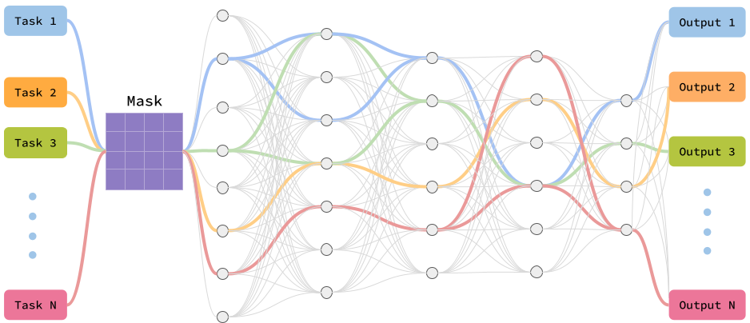
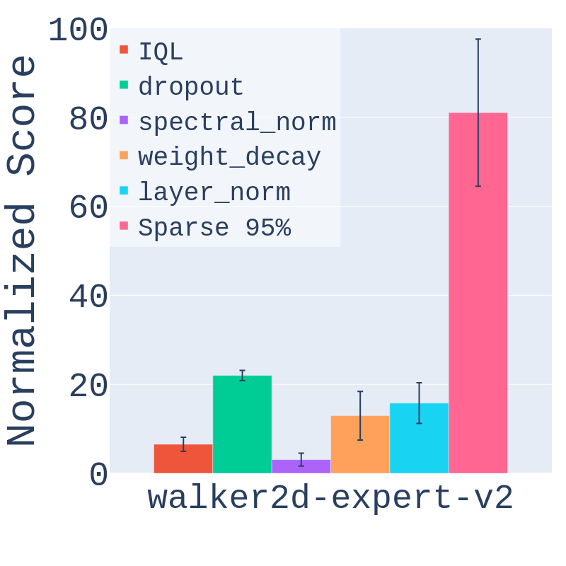
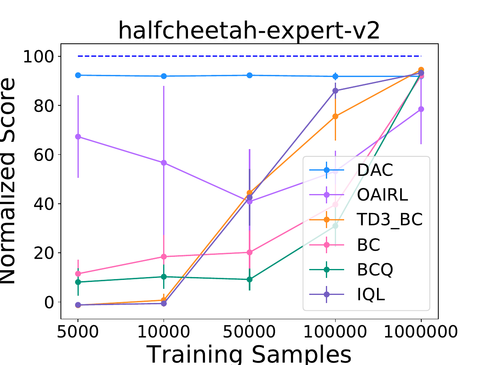
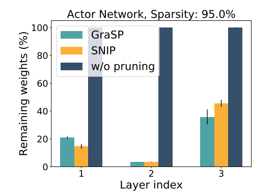
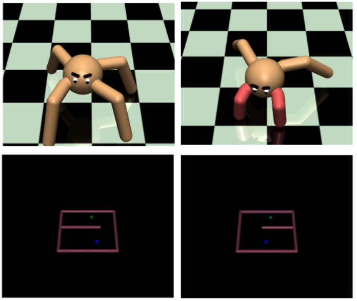

|
I am working at Cohere
I have completed PhD from McGill University and Mila, advised by Professor Doina Precup. My PhD focuses on efficient and adaptive learning in large neural networks by discovering and exploiting sparse subspaces inspired by brain-like neural pathways. I studied how overparameterized models in reinforcement learning and large language models can learn effectively using only a small subset of parameters, improving energy efficiency, scalability, and continual learning. My work introduces Neural Pathways for multitask RL, Sparse-Reg to improve sample efficiency and robustness in offline RL, and Sparse Adapters for modular and compositional LLM fine-tuning and model merging. Email / CV / Google Scholar / X / Github |
 |
|||
|
Cohere Member of Technical Staff 09/2025 – Present |
McGill University PhD student 01/2020 – 04/2026 |
Mila Student Researcher 01/2020 – 04/2026 |
|
|
Microsoft Research, MTL Student Researcher 03/2024 – 04/2025 |
Microsoft Research, NYC Research Intern 04/2023 – 08/2023 |
Ubisoft Research Intern 09/2021 – 08/2022 |
|
Cohere
05/2026-Present
Member of Technical Staff
LLM reasoning.
RL
LLM
Reasoning
Data pipeline
RLVR / post-training
Cohere
Fall 2025, Winter 2026
Intern of Technical Staff
Build controlled-synthetic reasoning pipelines and tooling for large-scale LLM reasoning and structured training recipes.
LLM
Reasoning
Data pipeline
RLVR / post-training
Microsoft Research, Montréal
Summer 2024, Fall 2024, Winter 2025
Student Researcher
Developed Sparse Adapters for modular, parameter-efficient fine-tuning LLMs and scalable model merging.
LLMs
Sparse adapters
Model merging
PEFT
Microsoft Research, NYC
Summer 2023
Applied Research Intern
Built agentic exploration systems using hierarchical world modelling and latent world modeling for efficient large-scale system interaction.
Agentic system
World models
Hierarchical planning
Exploration
Ubisoft
Fall 2021, Winter 2022, Summer 2022
Research Intern
conducted research on large map navigation for bots using imitation learning and offline RL, experimented with the GPT-2 model to enhance performance and generalization in automating bot navigation for future games.
Reinforcement Learning (RL)
GPT2
Imitation learning
Offline RL
Mila – Quebec AI Institute
2020 – Present
Student Researcher
Research with Doina Precup on sparse subspace optimization across reinforcement learning and large language models.
Reinforcement Learning (RL)
LLMs
Subspace learning
Sparse learning
|
|
Reinforcement Learning: Imitation Learning, Offline Reinforcement Learning, Multitask Learning, Representation Learning, Hierarchical World Model
|
|
 |
Samin Yeasar Arnob, Zhan Su, Minseon Kim, Oleksiy Ostapenko, Esra Saleh, Riyasat Ohib, Doina Precup, Lucas Page-Caccia, Alessandro Sordoni COLM 2025, Project, Code
Keywords: Sparse adapter, Parameter-efficient finetuning, Model merging, LLM |
|
 |
Samin Yeasar Arnob, Riyasat Ohib, Sergey Plis, Amy Zhang, Alessandro Sordoni, Doina Precup NeurIPS 2024, Project, Code
Keywords: Neural Pathways, Parameter-efficient training, (Online/Offline) RL, Multitask RL |
|
 |
Samin Yeasar Arnob, Scott Fujimoto, Doina Precup RLDM 2025, Code
Keywords: Offline RL, Sparsity, Regularization, Sample Complexity, Continuous Control |
|
 |
Samin Yeasar Arnob, Riashat Islam, Doina Precup NeurIPS 2021 (Offline RL Workshop), Code
Keywords: Offline RL, Sample Complexity |
|
 |
Samin Yeasar Arnob, Riyasat Ohib, Sergey Plis, Doina Precup NeurIPS 2021 (Offline RL Workshop)
Keywords: Offline RL, Sparse Networks, Pruning, Single-shot pruning |
|
 |
Samin Yeasar Arnob ICML 2020 (Lifelong Learning Workshop), Code
Keywords: RL, Transfer Learning, Inverse Reinforcement Learning |